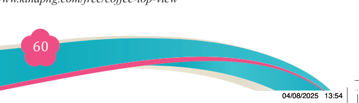
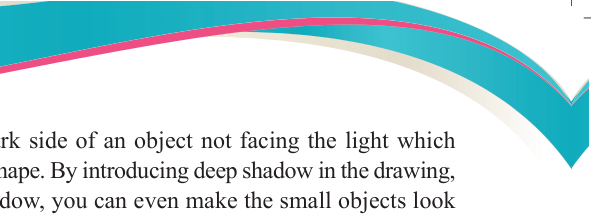
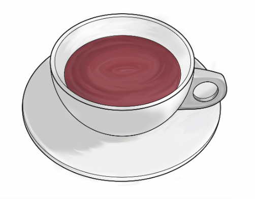
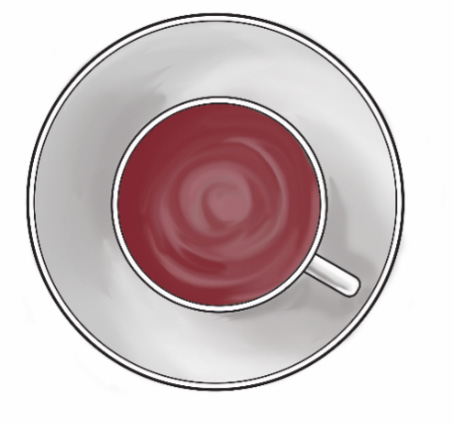
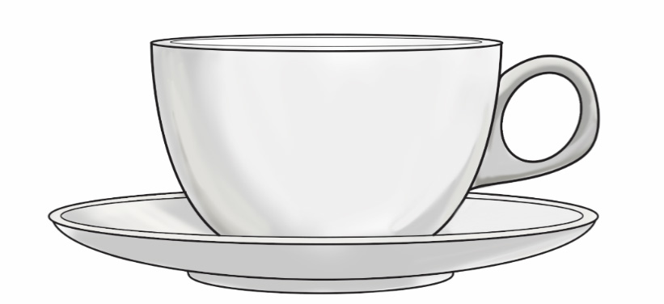

Fine Art for Secondary Schools

60


Student’s Book Form Two
Shadow in perspective is the dark side of an object not facing the light which reveals the form and mass of the shape. By introducing deep shadow in the drawing, you suggest depth. By using shadow, you can even make the small objects look three- dimensional. For example, the shade on the side of the tree which is behind
the light, changes the shape to a round form. The value of shades on the parts where
shadow falls will look richer compared to the parts where there is no shadow. The casting shadows from objects will look realistic if they are getting lighter as they move away from the objects. Observe the illustration in Figure 3.32.
(iv) Curves in perspective
Curves in perspective are a result of observing circular objects in different
angles. Circular objects appear circular when viewing them straight on. If you
turn them in any other way, they will change their view and look curved, not
circular. When a person looks at a cup of tea straight on and gradually changes
the angle, the shape will appear more curved as the angle changes to a point
where it will look flat. Observe the following illustrations in Figure 3.33 (a-c).


(a): 90-degree view of a cup of tea
Source:https://www.kindpng.com/free/coffee- top-view
(b): 45-degree view of a cup of tea
Source:https://www.kindpng.com/free/coffee- top-view

(c) 180-degree view of a cup of tea
Figure 3.33 (a-c): Circular objects changes to curve in perspective
Source: https://www.kindpng.com/free/coffee-top-view

04/08/2025 13:54